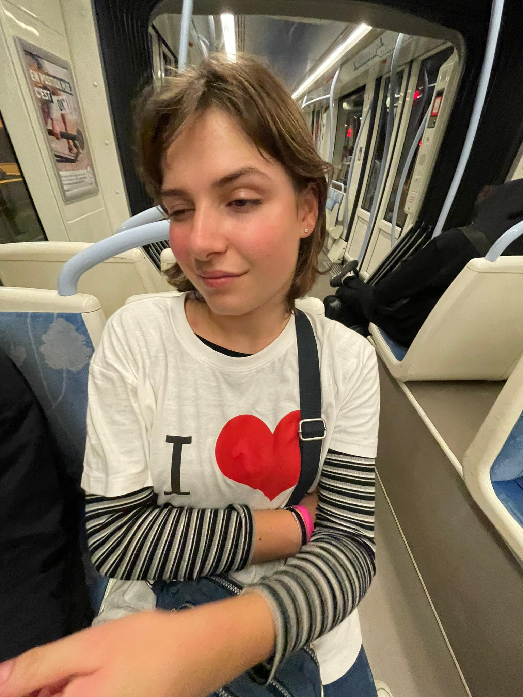
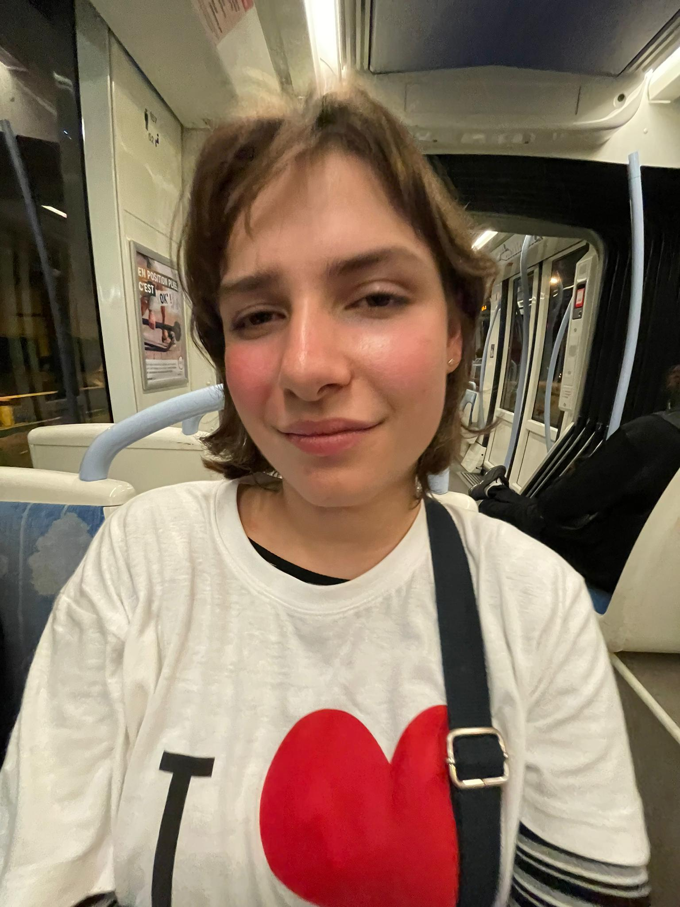
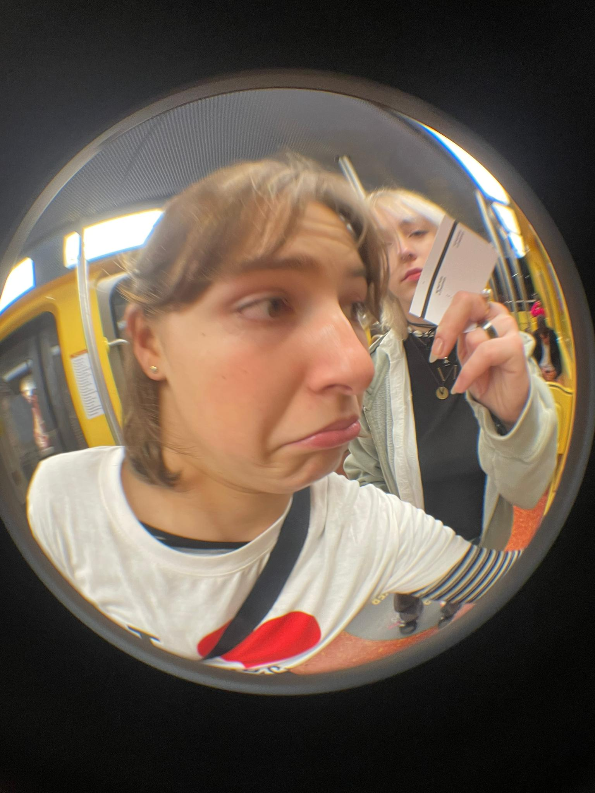
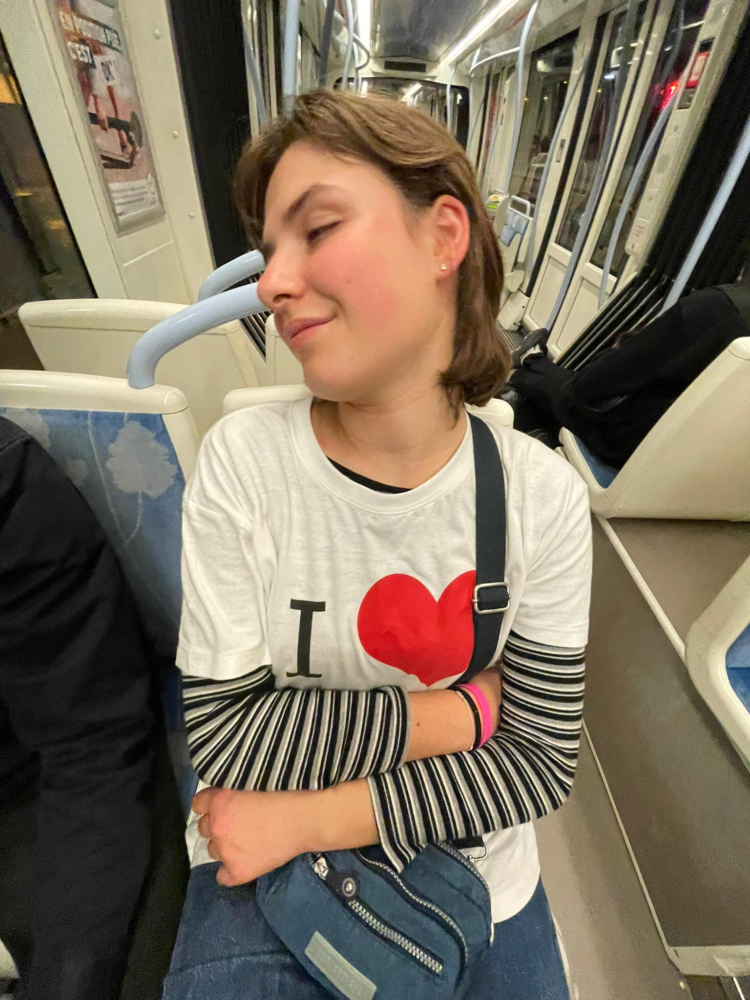
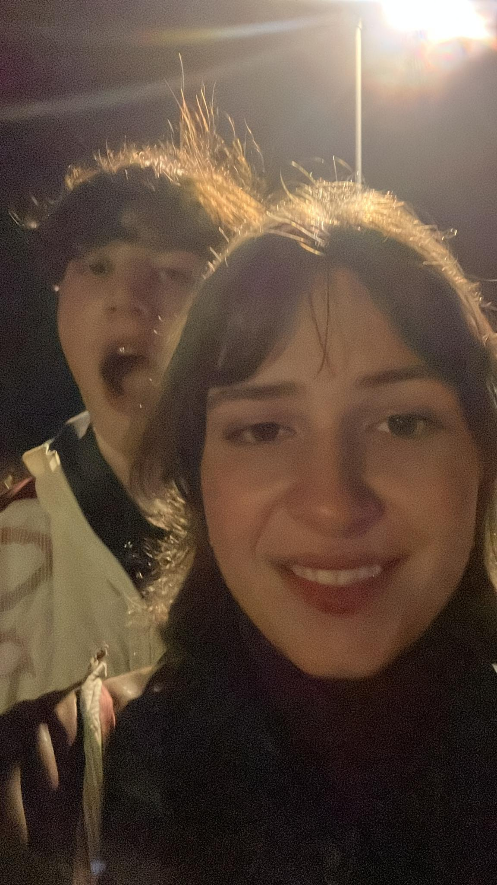
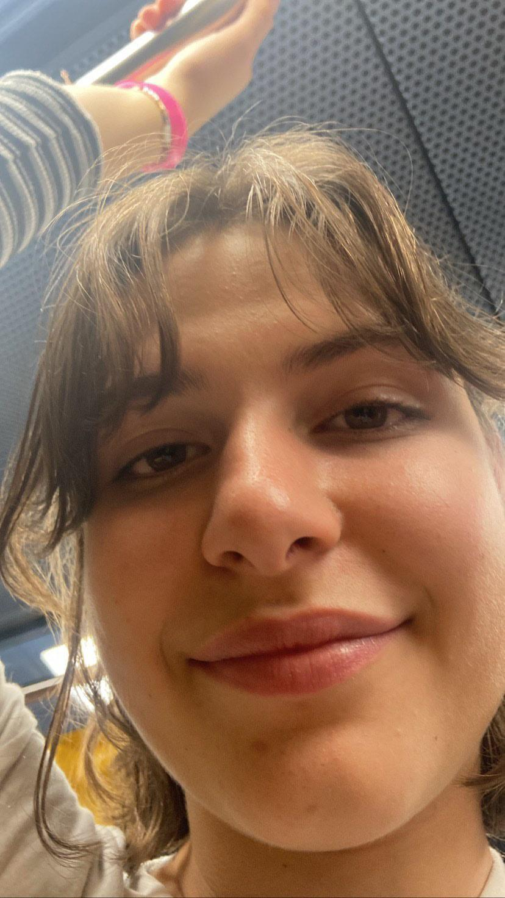

Alicia Martin
Tochter, Single & MPA
- 
- 
- 
- 
D’Alicia isch unglaublich. Es isch scho funny, aber ich han das gar ned gwüsst, bis ich use gfunde han, dass sie 18i wird. Das isch das was passiere wird bald. Das isch real alte. Ich han über vieli sache nache denkt. Sache wo ich ned drüber nach denkt han in langer Zit. Ich glaube ich han es für selbstverständlich ghalte das du immer en homie bliebsch. Wallah. Ich meine du bisch eifach immer ume. Du bringsch eus dezue am wucheendi früehner ufstoh zum „Zit mit de Homies“ verbringe und no vieli anderi sache, wo mich verrückt mached alte. Alles isch anderst sitdem Alis bald 18 wird.
Wallah Ich fühl mich glücklich wänn du frögsch wie min Tag gsie isch (ich hasse die frag eigentlich total frfr) oder es nervt, wänn du wieder mal zu spat use chunsch will dini Pflanze güsse muesch. Jetzt fühl ich mich huere glücklich wänn ich dis Töffli am wucheendi fahre ghöre. Ich gseh sogar die ganzi Zit dini snaps. Das heisst du bisch immerno ume. Immerno eusi Alicia.
- 
- 
Euse Brüeder Alis, isch MPA im KSA und sie isch so schlau, dass es nervt. Ich meine fucking super brainiac annoying. Sie weis so huere random scheiss. Zum bispiel das wenn du zu viel Bubatz duesch rauche du explodiere duesch. Usserdem weis sie au de geheime Jurassic Parc code und haltet ihn geheim. Wäge dim Job verstohsch du viel über Ärsch und Heroin. Du checksch ned emal was für en G du bisch, du bisch eifach so. Ich glaube du verstohsch würkli nöd, dass du ned wie jede bisch. Du duesch gern Kiffe wäge Chemie – am meiste duesch 53 Züg rauche – will du seisch das süchtig chemischi reaktione die ganzi zit bim kiffe passiered und du duesch dänn immer erkläre. Ich gange ned mit der id Bruefschuel, aber ich han ghört du bisch easy guet ih de Schuel. Du duesch viel dihei lerne, so viel isch klar.
Die ganzi Zit wo ich ih de schuel gsie bin (ich bin en Hurensohn) han ich immer ghört, was die andere lüt vo der denkt händ. Ich bin immer MR. Alica’s Homie gsie. (amigs händ sie dich „Hure“ gnennt, das isch de name gsie von dine comme des garcons, wo huere nach gaggi gstunke händ. Paar Shqipi’s händ dich beleidigt nume zum dich abfucke. Es paar lüt händ dich eifach dissed will mer das so bi Alicias macht. S’ding isch halt, du häsch erwartet, dass jede sis beste git, und wänn er das ned gmacht hät, häsch ihn behindert usgnoh. So bisch du wänn du dusse bsich und ih de schuel. Ich han erst grad jetzt use gfunde was für eh gueti Qualität das isch alte. Es macht würklich Sinn, das mer homies sind Alis. De Punkt isch, mir isch egal was die andere über eus säged. Was würklich zählt isch, dass du en guete Kolleg bisch und do chan mer niemert öppis anderes verzelle. Ich weis das es der au so wichtig isch. Nach dinere Familie, Döttige und Lüt usneh isch das das, was du am meiste liebsch. Ich hoffe würklich, das du mit dem witer machsch, und so bliebsch wie du bisch. Für dini Fam, Haaland und dini Homies.
Es isch eh schweri Zit sit dem mer alli ih de Lehr, oder sogar scho am schaffe sind. Ich weis es isch amigs schwer für eus sit dem alli so beschäftigt worde sind. Es paar lüt händ ja au scho eusi Gruppe verlasse und mer händ fast de Kontakt zu ihne verlore. Ich weis du willsch ned, das mer so öppis für dich mached. Aber genau das isch de Grund devör. Ned will mer dich wänd mad mache oder so, eifach zum gueti homies bliebe.
We love alis und ich glaub da spreched mer für alli :D. Bleib so wie du bischt und geniess deinen Geburtstag alda #BlueFire
Was en guete Homie ich han,
aber sie steckt in schwierigkeiten.
Sie wird 18 Jahre alt.
Mer bruched es Gschenk für Sie. Jetzt!
Zum helfe, bitte due eus geld twinte
Oder echli weed spese
Und denked ah min homie und düend zu Allah bete

ANY AMOUNT WOULD BE APPRECIATED!
Visitors so far: